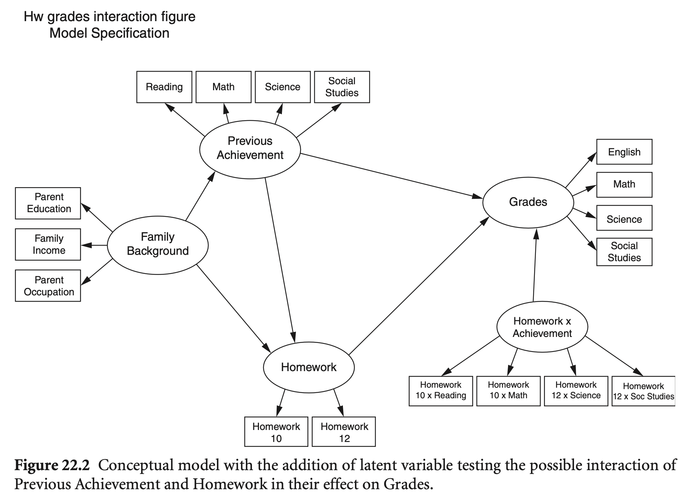

Load libraries
library(haven)
library(psych)
library(tidyverse)
library(lavaan)
library(semTools)
library(manymome)Multiple Regression and Beyond (3e) by Timothy Z. Keith
library(haven)
library(psych)
library(tidyverse)
library(lavaan)
library(semTools)
library(manymome)잠재변수의 상호작용 효과
카테고리 변수와 상호작용한다면, 앞서 multi-group SEM을 이용
두 연속 잠재변수간의 상호작용: 다양한 방식이 시도되며 여전히 연구 중; 요인의 값을 계산할 수 없어 상호작용항도 생성할 수 없음
XWITH 명령어로 간단히 구현 가능modsem package의 methods 참고이전 예에서, 학생의 이전 성취 수준에 따라 과제의 효과가 달라질 수 있는가?
즉, 성취도가 낮은 학생에게는 숙제에 더 많은 시간을 할애하는 것이 더 효과적일 수 있는가?

# Load the data
cols <- c("bytxrstd", "bytxmstd", "bytxsstd", "bytxhstd", "parocc", "hw10", "hw12", "eng12", "math12", "sci12", "ss12", "female", "byfaminc", "bypared", "minority")
hw <- read_delim("data/chap 22 latent var interactions and MLM/Latent Interactions/HW latent 8-12.dat", delim = " ", col_names = cols, na = "-999")
hw <- hw |> na.omit()hw_model <- '
famback =~ parocc + bypared + byfaminc
prevach =~ bytxrstd + bytxmstd + bytxsstd + bytxhstd
hw =~ hw10 + hw12
grades =~ eng12 + math12 + sci12 + ss12
bytxrstd ~~ eng12
bytxmstd ~~ math12
bytxsstd ~~ sci12
bytxhstd ~~ ss12
prevach ~ famback
hw ~ prevach + famback
grades ~ prevach + hw + prevach:hw # ":" interaction
'
library(modsem)
# double mean centering
hw_dblcent <- modsem(hw_model, data = hw, method = "dblcent") # default
summary(hw_dblcent) |> print()modsem (version 1.0.4, approach = dblcent):
lavaan 0.6-19 ended normally after 385 iterations
Estimator ML
Optimization method NLMINB
Number of model parameters 69
Number of observations 794
Model Test User Model:
Test statistic 256.142
Degrees of freedom 162
P-value (Chi-square) 0.000
Parameter Estimates:
Standard errors Standard
Information Expected
Information saturated (h1) model Structured
Latent Variables:
Estimate Std.Err z-value P(>|z|)
famback =~
parocc 1.000
bypared 0.071 0.004 18.999 0.000
byfaminc 0.116 0.007 17.752 0.000
prevach =~
bytxrstd 1.000
bytxmstd 1.012 0.036 28.237 0.000
bytxsstd 0.973 0.037 26.473 0.000
bytxhstd 0.933 0.035 26.603 0.000
hw =~
hw10 1.000
hw12 0.942 0.109 8.658 0.000
grades =~
eng12 1.000
math12 0.873 0.031 28.616 0.000
sci12 0.988 0.028 35.818 0.000
ss12 1.041 0.028 37.304 0.000
prevachhw =~
bytxrstdhw10 1.000
bytxmstdhw10 0.951 0.077 12.424 0.000
bytxsstdhw10 1.071 0.084 12.797 0.000
bytxhstdhw10 0.942 0.074 12.642 0.000
bytxrstdhw12 2.038 2.345 0.869 0.385
bytxmstdhw12 1.922 2.214 0.868 0.385
bytxsstdhw12 2.216 2.551 0.869 0.385
bytxhstdhw12 1.967 2.265 0.868 0.385
Regressions:
Estimate Std.Err z-value P(>|z|)
prevach ~
famback 0.289 0.023 12.441 0.000
hw ~
prevach 0.052 0.009 5.955 0.000
famback 0.015 0.005 3.227 0.001
grades ~
prevach 0.136 0.011 12.154 0.000
hw 0.489 0.095 5.141 0.000
prevachhw 0.008 0.011 0.706 0.480
Covariances:
Estimate Std.Err z-value P(>|z|)
.bytxrstd ~~
.eng12 0.364 0.268 1.356 0.175
.bytxmstd ~~
.math12 1.632 0.350 4.668 0.000
.bytxsstd ~~
.sci12 0.470 0.305 1.542 0.123
.bytxhstd ~~
.ss12 0.269 0.287 0.936 0.349
.bytxhstdhw10 ~~
.bytxmstdhw12 0.000
.bytxrstdhw12 0.000
.bytxsstdhw12 0.000
.bytxmstdhw10 ~~
.bytxhstdhw12 0.000
.bytxrstdhw10 ~~
.bytxhstdhw12 0.000
.bytxsstdhw10 ~~
.bytxhstdhw12 0.000
.bytxmstdhw10 ~~
.bytxrstdhw12 0.000
.bytxsstdhw12 0.000
.bytxrstdhw10 ~~
.bytxmstdhw12 0.000
.bytxsstdhw10 ~~
.bytxmstdhw12 0.000
.bytxrstdhw10 ~~
.bytxsstdhw12 0.000
.bytxsstdhw10 ~~
.bytxrstdhw12 0.000
.bytxhstdhw10 ~~
.bytxhstdhw12 34.892 4.394 7.941 0.000
.bytxmstdhw10 ~~
.bytxhstdhw10 130.191 48.822 2.667 0.008
.bytxrstdhw10 ~~
.bytxhstdhw10 133.182 51.278 2.597 0.009
.bytxsstdhw10 ~~
.bytxhstdhw10 140.596 54.854 2.563 0.010
.bytxmstdhw12 ~~
.bytxhstdhw12 47.378 203.348 0.233 0.816
.bytxrstdhw12 ~~
.bytxhstdhw12 40.099 215.462 0.186 0.852
.bytxsstdhw12 ~~
.bytxhstdhw12 33.141 234.203 0.142 0.887
.bytxmstdhw10 ~~
.bytxmstdhw12 44.296 4.800 9.229 0.000
.bytxrstdhw10 ~~
.bytxmstdhw10 138.200 51.847 2.666 0.008
.bytxmstdhw10 ~~
.bytxsstdhw10 142.652 55.446 2.573 0.010
.bytxrstdhw12 ~~
.bytxmstdhw12 56.033 210.678 0.266 0.790
.bytxmstdhw12 ~~
.bytxsstdhw12 49.128 228.992 0.215 0.830
.bytxrstdhw10 ~~
.bytxrstdhw12 32.388 4.748 6.821 0.000
.bytxsstdhw10 144.756 58.237 2.486 0.013
.bytxrstdhw12 ~~
.bytxsstdhw12 34.132 242.613 0.141 0.888
.bytxsstdhw10 ~~
.bytxsstdhw12 37.987 5.304 7.162 0.000
famback ~~
prevachhw 5.625 7.572 0.743 0.458
Variances:
Estimate Std.Err z-value P(>|z|)
.parocc 205.248 13.657 15.029 0.000
.bypared 0.447 0.048 9.241 0.000
.byfaminc 2.887 0.189 15.242 0.000
.bytxrstd 27.188 1.847 14.724 0.000
.bytxmstd 26.775 1.843 14.525 0.000
.bytxsstd 32.415 2.049 15.822 0.000
.bytxhstd 29.092 1.852 15.710 0.000
.hw10 1.425 0.170 8.360 0.000
.hw12 2.471 0.185 13.334 0.000
.eng12 1.103 0.083 13.218 0.000
.math12 2.366 0.134 17.629 0.000
.sci12 1.409 0.095 14.834 0.000
.ss12 1.300 0.095 13.746 0.000
.bytxrstdhw10 221.253 54.852 4.034 0.000
.bytxmstdhw10 218.645 49.808 4.390 0.000
.bytxsstdhw10 233.675 62.691 3.727 0.000
.bytxhstdhw10 198.329 48.656 4.076 0.000
.bytxrstdhw12 148.114 223.711 0.662 0.508
.bytxmstdhw12 171.117 199.381 0.858 0.391
.bytxsstdhw12 147.265 264.304 0.557 0.577
.bytxhstdhw12 136.239 208.458 0.654 0.513
famback 223.156 20.894 10.680 0.000
.prevach 45.846 3.501 13.094 0.000
.hw 1.086 0.170 6.389 0.000
.grades 2.666 0.188 14.199 0.000
prevachhw 46.766 54.276 0.862 0.389
Standardized estimates:
standardized_estimates(hw_dblcent) |> print() lhs op rhs est.std se z pvalue ci.lower ci.upper
1 famback =~ parocc 0.722 0.022 32.299 0.000 0.678 0.766
2 famback =~ bypared 0.846 0.019 44.594 0.000 0.809 0.883
3 famback =~ byfaminc 0.715 0.023 31.687 0.000 0.671 0.759
4 prevach =~ bytxrstd 0.839 0.013 63.164 0.000 0.813 0.865
5 prevach =~ bytxmstd 0.843 0.013 64.948 0.000 0.818 0.869
6 prevach =~ bytxsstd 0.808 0.015 54.557 0.000 0.779 0.837
7 prevach =~ bytxhstd 0.811 0.015 55.336 0.000 0.783 0.840
8 hw =~ hw10 0.705 0.043 16.552 0.000 0.622 0.789
9 hw =~ hw12 0.580 0.040 14.617 0.000 0.502 0.657
10 grades =~ eng12 0.901 0.009 101.552 0.000 0.884 0.919
11 grades =~ math12 0.779 0.015 50.495 0.000 0.749 0.809
12 grades =~ sci12 0.876 0.010 86.301 0.000 0.856 0.896
13 grades =~ ss12 0.894 0.009 96.737 0.000 0.876 0.912
14 bytxrstd ~~ eng12 0.066 0.048 1.372 0.170 -0.028 0.161
15 bytxmstd ~~ math12 0.205 0.041 4.948 0.000 0.124 0.286
16 bytxsstd ~~ sci12 0.070 0.045 1.559 0.119 -0.018 0.157
17 bytxhstd ~~ ss12 0.044 0.046 0.942 0.346 -0.047 0.135
18 prevach ~ famback 0.537 0.031 17.146 0.000 0.476 0.599
19 hw ~ prevach 0.349 0.055 6.294 0.000 0.240 0.458
20 hw ~ famback 0.191 0.058 3.303 0.001 0.078 0.304
21 grades ~ prevach 0.500 0.036 13.859 0.000 0.429 0.571
22 grades ~ hw 0.266 0.045 5.902 0.000 0.178 0.354
23 grades ~ prevachhw 0.024 0.036 0.669 0.504 -0.046 0.094
24 prevachhw =~ bytxrstdhw10 0.418 0.242 1.728 0.084 -0.056 0.892
25 prevachhw =~ bytxmstdhw10 0.403 0.233 1.726 0.084 -0.055 0.860
26 prevachhw =~ bytxsstdhw10 0.432 0.250 1.729 0.084 -0.058 0.922
27 prevachhw =~ bytxhstdhw10 0.416 0.241 1.728 0.084 -0.056 0.888
28 prevachhw =~ bytxrstdhw12 0.753 0.434 1.736 0.083 -0.097 1.604
29 prevachhw =~ bytxmstdhw12 0.709 0.409 1.733 0.083 -0.093 1.510
30 prevachhw =~ bytxsstdhw12 0.781 0.449 1.738 0.082 -0.100 1.661
31 prevachhw =~ bytxhstdhw12 0.755 0.435 1.736 0.083 -0.097 1.608
32 bytxhstdhw10 ~~ bytxmstdhw12 0.000 0.000 NA NA 0.000 0.000
33 bytxhstdhw10 ~~ bytxrstdhw12 0.000 0.000 NA NA 0.000 0.000
34 bytxhstdhw10 ~~ bytxsstdhw12 0.000 0.000 NA NA 0.000 0.000
35 bytxmstdhw10 ~~ bytxhstdhw12 0.000 0.000 NA NA 0.000 0.000
36 bytxrstdhw10 ~~ bytxhstdhw12 0.000 0.000 NA NA 0.000 0.000
37 bytxsstdhw10 ~~ bytxhstdhw12 0.000 0.000 NA NA 0.000 0.000
38 bytxmstdhw10 ~~ bytxrstdhw12 0.000 0.000 NA NA 0.000 0.000
39 bytxmstdhw10 ~~ bytxsstdhw12 0.000 0.000 NA NA 0.000 0.000
40 bytxrstdhw10 ~~ bytxmstdhw12 0.000 0.000 NA NA 0.000 0.000
41 bytxsstdhw10 ~~ bytxmstdhw12 0.000 0.000 NA NA 0.000 0.000
42 bytxrstdhw10 ~~ bytxsstdhw12 0.000 0.000 NA NA 0.000 0.000
43 bytxsstdhw10 ~~ bytxrstdhw12 0.000 0.000 NA NA 0.000 0.000
44 bytxhstdhw10 ~~ bytxhstdhw12 0.212 0.139 1.532 0.125 -0.059 0.484
45 bytxmstdhw10 ~~ bytxhstdhw10 0.625 0.089 7.037 0.000 0.451 0.799
46 bytxrstdhw10 ~~ bytxhstdhw10 0.636 0.090 7.048 0.000 0.459 0.813
47 bytxsstdhw10 ~~ bytxhstdhw10 0.653 0.089 7.322 0.000 0.478 0.828
48 bytxmstdhw12 ~~ bytxhstdhw12 0.310 0.915 0.339 0.734 -1.483 2.103
49 bytxrstdhw12 ~~ bytxhstdhw12 0.282 1.089 0.259 0.795 -1.852 2.416
50 bytxsstdhw12 ~~ bytxhstdhw12 0.234 1.265 0.185 0.853 -2.246 2.714
51 bytxmstdhw10 ~~ bytxmstdhw12 0.229 0.110 2.086 0.037 0.014 0.444
52 bytxrstdhw10 ~~ bytxmstdhw10 0.628 0.089 7.095 0.000 0.455 0.802
53 bytxmstdhw10 ~~ bytxsstdhw10 0.631 0.091 6.936 0.000 0.453 0.809
54 bytxrstdhw12 ~~ bytxmstdhw12 0.352 0.854 0.412 0.680 -1.321 2.025
55 bytxmstdhw12 ~~ bytxsstdhw12 0.309 0.986 0.314 0.754 -1.623 2.241
56 bytxrstdhw10 ~~ bytxrstdhw12 0.179 0.115 1.549 0.121 -0.047 0.405
57 bytxrstdhw10 ~~ bytxsstdhw10 0.637 0.094 6.777 0.000 0.452 0.821
58 bytxrstdhw12 ~~ bytxsstdhw12 0.231 1.262 0.183 0.855 -2.242 2.704
59 bytxsstdhw10 ~~ bytxsstdhw12 0.205 0.158 1.294 0.196 -0.105 0.515
60 parocc ~~ parocc 0.479 0.032 14.853 0.000 0.416 0.542
61 bypared ~~ bypared 0.284 0.032 8.839 0.000 0.221 0.347
62 byfaminc ~~ byfaminc 0.489 0.032 15.142 0.000 0.425 0.552
63 bytxrstd ~~ bytxrstd 0.297 0.022 13.326 0.000 0.253 0.340
64 bytxmstd ~~ bytxmstd 0.289 0.022 13.171 0.000 0.246 0.331
65 bytxsstd ~~ bytxsstd 0.347 0.024 14.494 0.000 0.300 0.394
66 bytxhstd ~~ bytxhstd 0.342 0.024 14.365 0.000 0.295 0.388
67 hw10 ~~ hw10 0.503 0.060 8.363 0.000 0.385 0.620
68 hw12 ~~ hw12 0.664 0.046 14.435 0.000 0.574 0.754
69 eng12 ~~ eng12 0.187 0.016 11.710 0.000 0.156 0.219
70 math12 ~~ math12 0.393 0.024 16.380 0.000 0.346 0.441
71 sci12 ~~ sci12 0.232 0.018 13.031 0.000 0.197 0.267
72 ss12 ~~ ss12 0.200 0.017 12.129 0.000 0.168 0.233
73 bytxrstdhw10 ~~ bytxrstdhw10 0.826 0.202 4.087 0.000 0.430 1.221
74 bytxmstdhw10 ~~ bytxmstdhw10 0.838 0.188 4.463 0.000 0.470 1.206
75 bytxsstdhw10 ~~ bytxsstdhw10 0.813 0.216 3.766 0.000 0.390 1.237
76 bytxhstdhw10 ~~ bytxhstdhw10 0.827 0.200 4.131 0.000 0.435 1.219
77 bytxrstdhw12 ~~ bytxrstdhw12 0.433 0.654 0.662 0.508 -0.848 1.714
78 bytxmstdhw12 ~~ bytxmstdhw12 0.498 0.580 0.858 0.391 -0.639 1.634
79 bytxsstdhw12 ~~ bytxsstdhw12 0.391 0.701 0.557 0.577 -0.984 1.765
80 bytxhstdhw12 ~~ bytxhstdhw12 0.429 0.657 0.653 0.513 -0.859 1.718
81 famback ~~ famback 1.000 0.000 NA NA 1.000 1.000
82 prevach ~~ prevach 0.712 0.034 21.144 0.000 0.646 0.777
83 hw ~~ hw 0.770 0.040 19.143 0.000 0.691 0.849
84 grades ~~ grades 0.558 0.032 17.317 0.000 0.495 0.621
85 prevachhw ~~ prevachhw 1.000 0.000 NA NA 1.000 1.000
86 famback ~~ prevachhw 0.055 0.052 1.052 0.293 -0.048 0.158The Quasi Maximum Likelihood approach (QML)
내생변수 간의 상호작용의 경우, 우회해서 적용: modsem 글 참고
hw_linear <- '
prevach ~ famback
hw ~ prevach + famback
'
hw_nonlinear <- '
famback =~ parocc + bypared + byfaminc
prevach =~ bytxrstd + bytxmstd + bytxsstd + bytxhstd
hw =~ hw10 + hw12
grades =~ eng12 + math12 + sci12 + ss12
bytxrstd ~~ eng12
bytxmstd ~~ math12
bytxsstd ~~ sci12
bytxhstd ~~ ss12
grades ~ prevach + hw + prevach:hw
'
est_qml <- modsem(hw_nonlinear, data = hw, cov.syntax = hw_linear, method = "qml")
summary(est_qml)
modsem (version 1.0.4):
Estimator QML
Optimization method NLMINB
Number of observations 794
Number of iterations 63
Loglikelihood -25991.01
Akaike (AIC) 52072.01
Bayesian (BIC) 52282.48
Fit Measures for H0:
Loglikelihood -25991
Akaike (AIC) 52070.02
Bayesian (BIC) 52275.81
Chi-square 123.95
Degrees of Freedom (Chi-square) 60
P-value (Chi-square) 0.000
RMSEA 0.011
Comparative fit to H0 (no interaction effect)
Loglikelihood change 0.00
Difference test (D) 0.01
Degrees of freedom (D) 1
P-value (D) 0.934
R-Squared:
grades 0.450
prevach 0.287
hw 0.229
R-Squared Null-Model (H0):
grades 0.450
prevach 0.288
hw 0.229
R-Squared Change:
grades 0.000
prevach 0.000
hw 0.000
Parameter Estimates:
Coefficients unstandardized
Information observed
Standard errors standard
Latent Variables:
Estimate Std.Error z.value P(>|z|)
prevach =~
bytxrstd 1.000
bytxmstd 1.015 0.036 27.84 0.000
bytxsstd 0.975 0.037 26.36 0.000
bytxhstd 0.934 0.035 26.73 0.000
famback =~
parocc 1.000
bypared 0.071 0.004 19.13 0.000
byfaminc 0.116 0.007 17.78 0.000
hw =~
hw10 1.000
hw12 0.943 0.107 8.79 0.000
grades =~
eng12 1.000
math12 0.883 0.031 28.66 0.000
sci12 0.985 0.028 35.53 0.000
ss12 1.040 0.028 37.64 0.000
Regressions:
Estimate Std.Error z.value P(>|z|)
grades ~
prevach 0.139 0.011 12.21 0.000
hw 0.491 0.100 4.93 0.000
prevach:hw -0.001 0.007 -0.12 0.905
prevach ~
famback 0.288 0.023 12.37 0.000
hw ~
famback 0.015 0.005 3.19 0.001
prevach 0.052 0.009 5.90 0.000
Intercepts:
Estimate Std.Error z.value P(>|z|)
bytxrstd 52.482 0.340 154.56 0.000
bytxmstd 52.628 0.342 153.75 0.000
bytxsstd 52.269 0.343 152.27 0.000
bytxhstd 52.495 0.328 160.21 0.000
parocc 53.212 0.735 72.44 0.000
bypared 3.250 0.045 72.99 0.000
byfaminc 10.127 0.086 117.44 0.000
hw10 2.587 0.060 43.30 0.000
hw12 3.395 0.068 49.59 0.000
eng12 6.535 0.092 71.35 0.000
math12 5.865 0.092 63.95 0.000
sci12 6.188 0.092 66.91 0.000
ss12 6.689 0.096 69.76 0.000
grades 0.000
prevach 0.000
famback 0.000
hw 0.000
Variances:
Estimate Std.Error z.value P(>|z|)
bytxrstd 27.189 1.844 14.74 0.000
bytxmstd 26.770 1.863 14.37 0.000
bytxsstd 32.415 2.045 15.85 0.000
bytxhstd 29.093 1.845 15.77 0.000
parocc 205.247 13.630 15.06 0.000
bypared 0.448 0.049 9.21 0.000
byfaminc 2.889 0.191 15.11 0.000
hw10 1.425 0.169 8.42 0.000
hw12 2.470 0.184 13.45 0.000
eng12 1.111 0.083 13.40 0.000
math12 2.352 0.135 17.48 0.000
sci12 1.406 0.095 14.77 0.000
ss12 1.300 0.094 13.90 0.000
grades 2.638 0.190 13.87 0.000
famback 223.156 20.808 10.72 0.000
prevach 45.844 3.510 13.06 0.000
hw 1.087 0.169 6.42 0.0002차항을 추가하여 곡선적 효과를 검증; 즉, X와 X의 상호작용으로 이루어진 새로운 변수를 추가
hw_model_sq <- '
famback =~ parocc + bypared + byfaminc
prevach =~ bytxrstd + bytxmstd + bytxsstd + bytxhstd
hw =~ hw10 + hw12
grades =~ eng12 + math12 + sci12 + ss12
bytxrstd ~~ eng12
bytxmstd ~~ math12
bytxsstd ~~ sci12
bytxhstd ~~ ss12
prevach ~ famback
hw ~ prevach + famback
grades ~ prevach + hw + hw:hw
'
hw_dblcent_sq <- modsem(hw_model_sq, data = hw, method = "dblcent") # default
summary(hw_dblcent_sq) |> print()modsem (version 1.0.4, approach = dblcent):
lavaan 0.6-19 ended normally after 249 iterations
Estimator ML
Optimization method NLMINB
Number of model parameters 45
Number of observations 794
Model Test User Model:
Test statistic 594.603
Degrees of freedom 91
P-value (Chi-square) 0.000
Parameter Estimates:
Standard errors Standard
Information Expected
Information saturated (h1) model Structured
Latent Variables:
Estimate Std.Err z-value P(>|z|)
famback =~
parocc 1.000
bypared 0.070 0.004 19.016 0.000
byfaminc 0.116 0.007 17.757 0.000
prevach =~
bytxrstd 1.000
bytxmstd 1.011 0.036 28.223 0.000
bytxsstd 0.973 0.037 26.480 0.000
bytxhstd 0.933 0.035 26.628 0.000
hw =~
hw10 1.000
hw12 0.897 0.094 9.533 0.000
grades =~
eng12 1.000
math12 0.872 0.030 29.360 0.000
sci12 0.987 0.027 36.817 0.000
ss12 1.042 0.027 38.483 0.000
hwhw =~
hw10hw10 1.000
hw12hw10 0.320 0.133 2.413 0.016
hw12hw12 0.559 0.213 2.620 0.009
Regressions:
Estimate Std.Err z-value P(>|z|)
prevach ~
famback 0.291 0.023 12.521 0.000
hw ~
prevach 0.049 0.009 5.666 0.000
famback 0.018 0.005 3.886 0.000
grades ~
prevach 0.132 0.012 11.402 0.000
hw 0.691 0.102 6.747 0.000
hwhw -0.178 0.071 -2.515 0.012
Covariances:
Estimate Std.Err z-value P(>|z|)
.bytxrstd ~~
.eng12 0.368 0.268 1.371 0.170
.bytxmstd ~~
.math12 1.622 0.350 4.632 0.000
.bytxsstd ~~
.sci12 0.466 0.305 1.527 0.127
.bytxhstd ~~
.ss12 0.280 0.287 0.975 0.329
.hw10hw10 ~~
.hw12hw12 0.000
.hw12hw10 5.255 1.064 4.941 0.000
.hw12hw10 ~~
.hw12hw12 6.124 0.730 8.383 0.000
famback ~~
hwhw 8.352 2.347 3.559 0.000
Variances:
Estimate Std.Err z-value P(>|z|)
.parocc 204.369 13.635 14.988 0.000
.bypared 0.464 0.048 9.650 0.000
.byfaminc 2.873 0.189 15.195 0.000
.bytxrstd 27.158 1.846 14.713 0.000
.bytxmstd 26.850 1.846 14.547 0.000
.bytxsstd 32.414 2.049 15.820 0.000
.bytxhstd 29.043 1.850 15.698 0.000
.hw10 1.363 0.159 8.573 0.000
.hw12 2.540 0.173 14.713 0.000
.eng12 1.101 0.083 13.259 0.000
.math12 2.372 0.134 17.656 0.000
.sci12 1.414 0.095 14.899 0.000
.ss12 1.291 0.094 13.744 0.000
.hw10hw10 10.622 2.641 4.023 0.000
.hw12hw10 11.705 0.777 15.059 0.000
.hw12hw12 22.084 1.385 15.940 0.000
famback 224.030 20.923 10.707 0.000
.prevach 45.550 3.487 13.062 0.000
.hw 1.121 0.164 6.820 0.000
.grades 2.370 0.206 11.509 0.000
hwhw 6.756 2.677 2.524 0.012
The Quasi Maximum Likelihood approach (QML)
hw_linear <- '
prevach ~ famback
hw ~ prevach + famback
'
hw_nonlinear_sq <- '
famback =~ parocc + bypared + byfaminc
prevach =~ bytxrstd + bytxmstd + bytxsstd + bytxhstd
hw =~ hw10 + hw12
grades =~ eng12 + math12 + sci12 + ss12
bytxrstd ~~ eng12
bytxmstd ~~ math12
bytxsstd ~~ sci12
bytxhstd ~~ ss12
grades ~ prevach + hw + hw:hw
'
est_qml_sq <- modsem(hw_nonlinear_sq, data = hw, cov.syntax = hw_linear, method = "qml")
summary(est_qml_sq)
modsem (version 1.0.4):
Estimator QML
Optimization method NLMINB
Number of observations 794
Number of iterations 117
Loglikelihood -25987.85
Akaike (AIC) 52065.69
Bayesian (BIC) 52276.16
Fit Measures for H0:
Loglikelihood -25991
Akaike (AIC) 52070.02
Bayesian (BIC) 52275.81
Chi-square 123.95
Degrees of Freedom (Chi-square) 60
P-value (Chi-square) 0.000
RMSEA 0.011
Comparative fit to H0 (no interaction effect)
Loglikelihood change 3.16
Difference test (D) 6.32
Degrees of freedom (D) 1
P-value (D) 0.012
R-Squared:
grades 0.471
prevach 0.290
hw 0.214
R-Squared Null-Model (H0):
grades 0.450
prevach 0.288
hw 0.229
R-Squared Change:
grades 0.021
prevach 0.002
hw -0.015
Parameter Estimates:
Coefficients unstandardized
Information observed
Standard errors standard
Latent Variables:
Estimate Std.Error z.value P(>|z|)
hw =~
hw10 1.000
hw12 0.887 0.111 8.00 0.000
famback =~
parocc 1.000
bypared 0.071 0.004 19.14 0.000
byfaminc 0.116 0.007 17.78 0.000
prevach =~
bytxrstd 1.000
bytxmstd 1.015 0.037 27.80 0.000
bytxsstd 0.977 0.037 26.34 0.000
bytxhstd 0.937 0.035 26.72 0.000
grades =~
eng12 1.000
math12 0.883 0.031 28.64 0.000
sci12 0.986 0.028 35.50 0.000
ss12 1.041 0.028 37.65 0.000
Regressions:
Estimate Std.Error z.value P(>|z|)
grades ~
hw 0.549 0.096 5.74 0.000
prevach 0.138 0.011 12.45 0.000
hw:hw -0.127 0.050 -2.54 0.011
prevach ~
famback 0.288 0.023 12.39 0.000
hw ~
famback 0.015 0.005 3.22 0.001
prevach 0.051 0.009 5.80 0.000
Intercepts:
Estimate Std.Error z.value P(>|z|)
hw10 2.587 0.060 43.29 0.000
hw12 3.395 0.068 49.58 0.000
parocc 53.208 0.735 72.43 0.000
bypared 3.251 0.045 72.95 0.000
byfaminc 10.127 0.086 117.39 0.000
bytxrstd 52.479 0.339 154.73 0.000
bytxmstd 52.624 0.342 153.82 0.000
bytxsstd 52.265 0.343 152.24 0.000
bytxhstd 52.491 0.328 160.12 0.000
eng12 6.721 0.116 58.17 0.000
math12 6.029 0.111 54.37 0.000
sci12 6.371 0.116 55.08 0.000
ss12 6.882 0.121 56.98 0.000
grades 0.000
hw 0.000
famback 0.000
prevach 0.000
Variances:
Estimate Std.Error z.value P(>|z|)
hw10 1.320 0.193 6.84 0.000
hw12 2.531 0.190 13.36 0.000
parocc 204.376 13.561 15.07 0.000
bypared 0.450 0.049 9.26 0.000
byfaminc 2.889 0.191 15.12 0.000
bytxrstd 27.190 1.841 14.77 0.000
bytxmstd 26.809 1.863 14.39 0.000
bytxsstd 32.411 2.046 15.84 0.000
bytxhstd 29.059 1.846 15.74 0.000
eng12 1.115 0.083 13.43 0.000
math12 2.356 0.134 17.52 0.000
sci12 1.406 0.095 14.79 0.000
ss12 1.292 0.093 13.86 0.000
grades 2.519 0.191 13.16 0.000
famback 224.038 20.905 10.72 0.000
prevach 45.557 3.482 13.08 0.000
hw 1.191 0.196 6.06 0.000